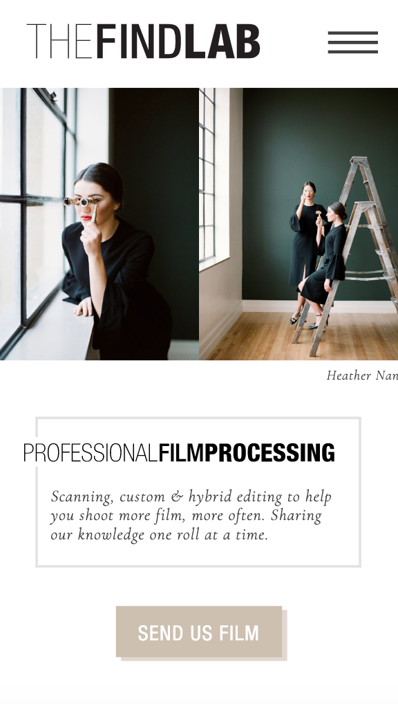

White Space and Clean Design
Google is known for having a bright clean layout on the homepage. Even in the mobile version it is still clean looking with plenty of white space, that ironically is the color white. There is also a good amout of margins between each element that allows for clean breaks. By having well balnaced design and white space this helps make the colorful Google logo stand out.
Contrast
Shutterstock
shutterstock.com
There is contrast in several areas in this mobile page. First, the logo of bright red and black stand out against the white background. Second, the search button is the same bright red as the logo with a white magnifying glass stands out and cathes the eye. Third, in the free trail section, the bright white text stands out nicely from the red and black background. The colors complement eachother nicely while still standing out.
Alignment
The Find Lab
thefindlab.com The Find Lab's mobile website has a few aligned elements. The logo at the top along with the professional film processing title. Then the images showcased are also aligned. By having this alignment it not only helps make the mobile version of the site look clean and orgainized, it also helps maintain the professionalism of the company through the design.